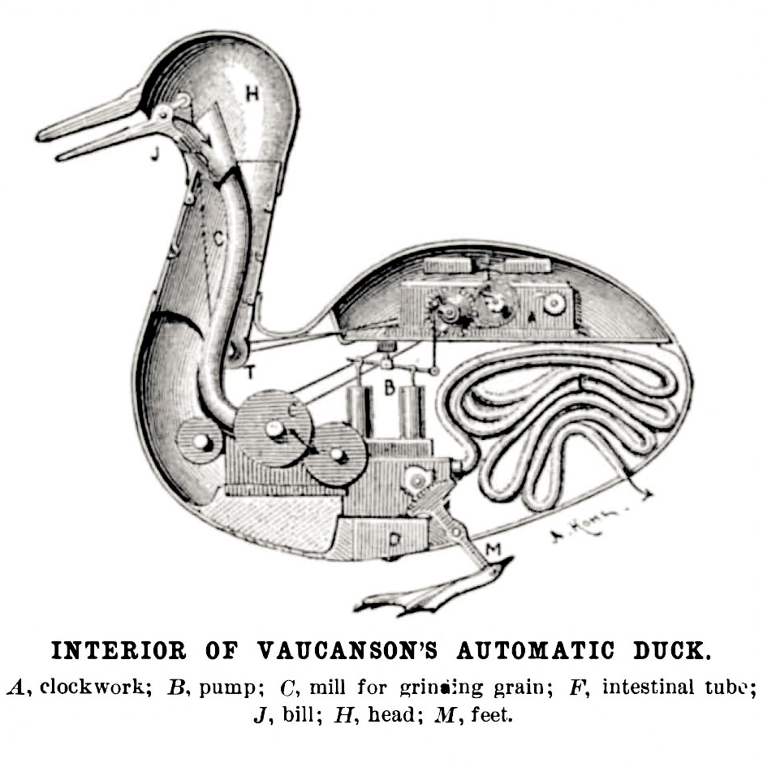

Bayle on animal souls
Mon., Feb. 3
This class session covers Pierre Bayle’s treatment of animal souls (in the footnotes to his Dictionary article “Rorarius”).
Bayle, a Cartesian/Malebranchean-turned-skeptic, shows how the Cartesian view (that animals are pure machines) might do better than the traditional
Aristotelian view (that animals have an inferior kind of soul) at avoiding the dangerous view that humans and animals are actually the same kind of thing.
(But whose side is Bayle really on?)
Key Concepts: The Bête-Machine Doctrine
Readings:
Class Notes:
Other Resources:
Stanford Encyclopedia of Philosophy
Internet Encyclopedia of Philosophy